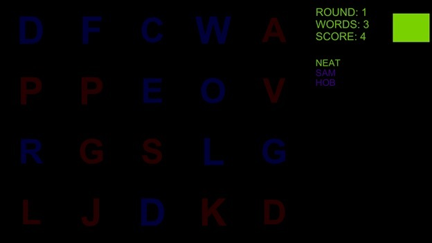
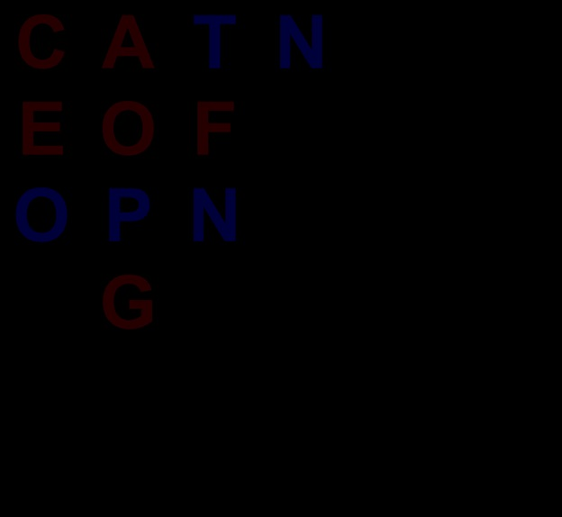
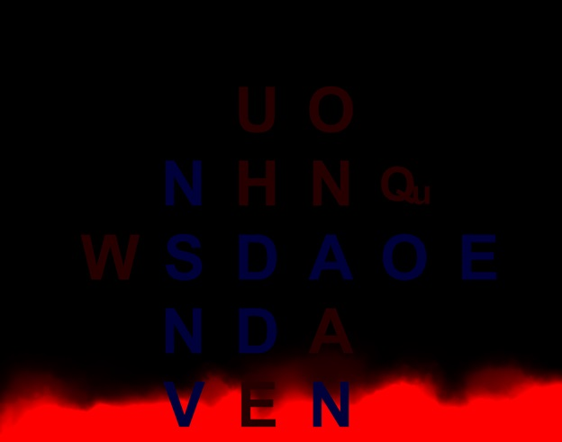
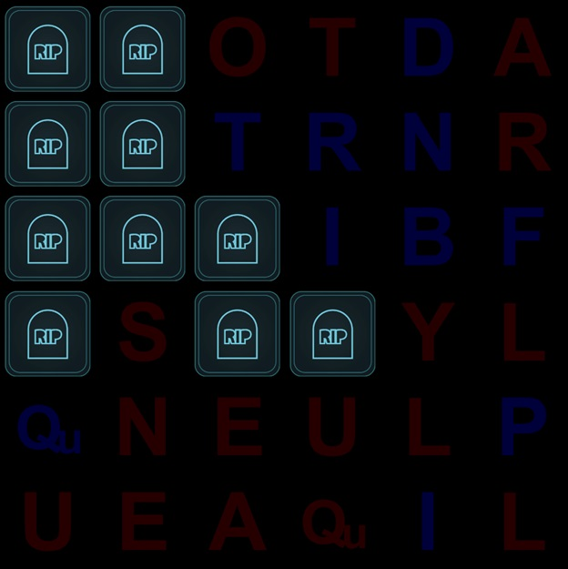
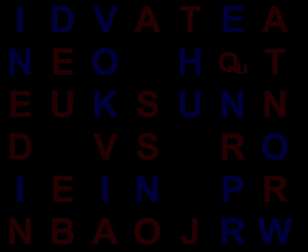
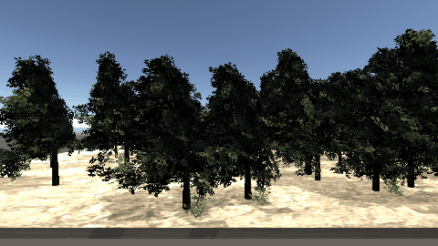
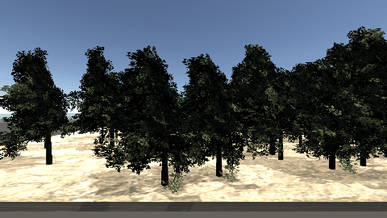

Bryan Franz
Hello! I'm a recent Computer Science BS grad, with a previous BS in Mathematics. Most of my work is in game development, medical research, machine learning (genetic algorithms), and physics simulation.
I like data science and mixing object oriented principles with component-based architectures like what Unity3D provides. This is a collection of my favorite programming and math projects.
In my spare time, I like to read mind-blowing books, play volleyball, rock climb, scuba dive, go indoor/outdoor skydiving, and volunteer with kids.
Professional skill stack:
- C++, C#.NET, Python, JavaScript, R
- Data analysis with NumPy, SciPy, Pandas, SQL, Rocks HPC Cluster
- Winows, Linux, git, Agile, Visual Studio 2015, Unity3D
- HLSL/Cg shader development with DirectX 9 and 11
- Academic experience with Hadoop, Apache Pig, AWS, and Docker
- Working knowledge of sound design, audio processing, music theory, live sound, and studio recording using Logic 8, Cubase 9, Cakewalk SONAR, and EastWest synthesizers
Enjoy!


MONA (Multi-Omics Network Analysis)
Project Description
During my year-long internship at Moffitt Cancer Center, I was on a small software development team in the Bioinformatics Core, working on one of their new research programs, MONA. MONA is a data analysis program that finds speculative interactions between genes and metabolites which may not be annotated yet. This gives researchers another tool to identify likely interactions to do further study on. MONA was originally designed for lung cancer research, but its flexible approach lends it toward anything involving genes, metabolites, proteins, and micro RNA.
Features
- Real-time, interactive force directed graph
- Pathway enrichment for network combinations
- Network output in CSV and XGMML formats
- Unique Features:
- Network based approach for integrative data analysis
- Uses weighted correlations to find new possible interactions in experiment data
My Contributions
I started my work MONA by making test cases for the existing codebase. It was mostly data analysis on various inputs, confirming theories with a bioinformatics statistician at Moffitt, and making appropriate changes to the Python code. Afterwards, I moved on to the R codebase. There was an existing R project, but it was for a much older version of MONA, so I started from scratch. MONA uses an atypical CSV output format so I first made a parser for it.
For the data visualization, I decided to use the Shiny framework. RShiny is useful for quickly creating interactive web applications that incorporate R functionality. I experimented with several different visualization packages before settling on the visNetwork package. Since it created graphs that updated in real-time and could be pulled around by the user, it was a natural choice for large-scale data. It's also fun to use! Just look at the gif below:
While my internship has officially ended in December 2017, I am continuing work on MONA as a developer and contributor to the upcoming paper. I spend most of the time adding features and testing MONA with different experiment datasets.
NOTE:
This project is property of Moffitt Cancer Center and is currently unpublished. I'll update this after publication and add the link to the paper!
Real-Time Dynamic Water
Current Features
- Combines ocean waves with waves created by moving objects
- Special ripples for huge impacts
- Shallow water flow handling
- Custom surface shader with DX11 tessellation, vertex displacement, depth-based opacity, and automatic foam
This is a water system I'm working on for a hobby game. The goal is to create dynamic water for several boss battles.


Genetic Algorithm Environment
Project Description
I often have ideas for ways to apply genetic algorithms, but usually end up not implementing them due to the time required to get them working. GAB-Class is designed to allow users to set up a new genetic algorithm and start writing the fitness function within 15 minutes.
GAB-Class controls the fundamental genetic algorithm workflow, implements crossover and mutation phases with flexible settings, and provides easy-to-use static libraries for common GA methods. Everything is commented in Doxygen style so that users don't have to open the code.
Here is the link to the project source code, which has a more complete description: GitHub Source Code
Features
- Automatic advancement of each generation according to GA workflow
- Detection and handling of common GA problems to prevent exceptions
- Mutation Settings
- Mutations occur on "blocks" of sequential bits according to user settings. The user can define the block size, percentage chance of any bit being toggled, and restrict by bit/byte/value.
- Examples of what can be done:
- Toggle a random bit
- Toggle 20 random disconnected bits
- Mutate 1 random byte by giving each bit a 78% chance to toggle
- Mutate between 1 and 4 random values, giving each of their bits a 22% chance to toggle
- Give every bit a 1% chance of toggling
- Crossover Features
- Users can set the number of each crossover to perform each generation
- COPY - Volatile data is directly copied from elite parents
- SHUFFLE - Volatile data is copied from 2 elite parents, with each byte being chosen from a random parent
- N-SPLIT - Volatile data is copied in (N + 1) sequential chunks from 2 elite parents
- Encoding Supported
- Any primitive
- Numeric vectors, including floats and doubles
- Boolean vectors
- Input/Output in binary and CSV format
- Example Algorithms
- Knapsack problem
- Sudoku puzzle
- Template derived class for quickly setting up new GAs
Unity3D Action Game
Technical Features
- 5 boss battles (more in testing phase)
- AI includes FSM and attack combo system
- HLSL shader library
- Player controls with dodging, attack combos, stamina, poise, and custom physics controller
- Custom hit detection system using geometry rather than ray traces (for increased speed and scalability)
Project Description
This is my main hobby project. The basic combat is inspired by Dark Souls and I experimented with new mechanics like altering combat with dynamic water. Many of my portfolio projects are large modules that I use for this game.
Hair Physics
Project Description
I had previously experimented with modeling hair in Blender for my Unity3D game, but as the combat become more action-packed, I wanted the hair to act as a flag and emphasize the movement.
Procedural Spider Animation
Project Description
I created this project to support my hobby game in order to maximize the impact and weight of animations. The Blender3D plugin Rigify helped a lot with animation, but I wanted to use procedural techniques on top of it to make characters lean into momentum changes, and to react dynamically when hit from any angle.
Features
- Fast, smooth approximation of foot IK for spiders
- Impact reaction system for spiders and other monsters that handles impacts from all angles
- Momentum shifts usable for all actors (humanoids, spiders, monsters...)
Word Search Game for Amblyopia Eye Therapy
What is Amblyopia?
Ambylopia is an eye problem where a person has a weakened eye. In many cases, the person favors their strongest eye, and the weak eye can begin to wander. According to Lazyeyegames.com, almost 3% of people have this problem, and it involves the brain ignoring a certain amount of input from the weak eye.
In order to improve, the brain must be forced to use both eyes simultaneously. This point affected the game design and steered me away from making a game that simply exercised the weak eye, and toward a game design that required the player to use both eyes at the same time.
To accomplish this, I decided to create a handful of minigames using the idea behind a popular word search game. Being a game where the player searches for words among random letters, the players’ eyes must be watching many things simultaneously and looking for patterns.
How is the game set up to use both eyes?
The player wears red-blue glasses. The game colors are tweaked so that the red aligns with the red lens and the blue with the blue lens. When letters in these colors are drawn on a black screen, the player sees a different image in each eye. The game is set up so that letters are randomly assigned to be blue or red.
Through experimentation, I found that viewing other colors through the glasses was disorienting and stressful. This was due to the colors looking very different in each eye, and being able to see both colors simultaneously. However, yellow and purple were fairly neutral, so I used those to convey information to the player quickly and kept the visual design simple.
Implementation
To handle so many words in a quick manner, I loaded 235,886 words into a dictionary. Since the data did not include plurals, the game automatically assumes that valid words with an “S” at the end are also valid. Furthermore, if a word is rejected, the player can press a key to have it added to a secondary dictionary of custom words.
Best game modes
I added 8 game modes total. Here are a few:

The player starts with only the word "CAT" on the top left. Typing a word causes all the letters next to that word to be discovered. The goal is to uncover the entire grid before time runs out.
Letters sink into lava, according to how “heavy” they are. Typing words adds new random letters around those words, but also increases the weight. The player attempts to stay above the lava for as long as possible.
Typing a word holds the zombies at bay, but if no word is typed within a couple seconds, the zombies are given 1 turn to spread. Eventually, they take over the entire grid.
This mode increases the grid size, shrinks the letters, and adds random blank spaces. To increase the tension, there is a sound loop of wolves howling, so that players can feel like they're about to be eaten if they don't find enough words.
Making it fun and responsive!
It's difficult for people with amblyopia to use their eyes together and sometimes they will get headaches while doing so. To make the game less stressful, I included settings for letter size and the speed of the game so players could adjust the game to their comfort level.
I also wanted to make the game as enjoyable as possible, so people would do their therapy regularly. This was fairly challenging because I couldn't use techniques like screenshake and particle bursts. The visuals needed to be simple and extremely clear at all times. In the end, I decided to add these features:
Conclusion
It was an amazing experience being able to work on this project. Technology can be a powerful new tool for dealing with medical conditions and games can offer a way to make it a more fun and enjoyable experience.
FUTURE PLANS: I'm in contact with the USF professor who oversaw the project for getting medical approval. We need a larger sample size before applying for FDA approval. I don't think it will happen soon, but it would be nice as there aren't many games out there for Amblyopia.
Displacement Shaders for Hurricane Winds
Current Features
- Inputs for wind direction and force
- "Normal" and "Extreme" settings allow control over how much the main tree trunk bends
- Automatic wind variations based on user settings
- Works with both static and dynamic wind inputs
Figure 1: Happy trees

Figure 2: Small fluctuations

Figure 3: Uniform bending (bad!)
{kind=link}
Figure 4: Adding variation
{kind=link}
Figure 5: Extreme wind

Design Choices
In order to allow for large numbers of trees being rendered, I decided to preserve static and dynamic batching. This meant that I couldn't modify the original mesh data for individual trees. To get around this problem, I left the meshes alone and created shaders with vertex displacement functions.
This created some new limitations. The problem was almost stateless, with the only inputs being the unmodified vertex positions in local space and the time since startup, and no way to store vertex data like velocity. To get around this, I decided to make every function deterministic and continuous, while adding as many factors as possible in order to break up the motion according to tree position and time.
Music Evolution
Project Description
This project served as my senior project while getting a math degree. I only knew VB6 at the time and decided to use VBA in Excel. I had it output the music to an Excel sheet mimicing a piano roll, which I would then play on my MIDI keyboard.
That took a very long time (I play guitar, not piano), so for most of the development, I wasn't able to actually hear the music.
Preparation Phase
The program started by generating a pseudo-random chord progression. This didn't have a direct effect on the notes, but influenced the fitness function. The 2nd preparation phase was deciding where notes would occur for each instrument. I wrote a short GA for this.
Evolving the Notes
This was the most important and processor-heavy part of the project. The GA started by filling in the previously-assigned note locations with completely random pitches in the ranges of each instrument. It then created 99 copies so there were 100 total quartet passages, or "individuals" (in GA terms).
Fitness Function
Each generation, the individuals were scored according to a fitness function meant to reflect how "good" they should sound. Research has shown that popular songs tend to flow the way the brain expects them to, but also have a small, important level of unexpectedness. I used that principle by recording how much variance there was in each individual and combining that with a score of how well it fit music theory and the intended chord progression. This was done in several passes:
Each note was evaluated based on how it flowed into and out of the notes around it (based on intervals), and the harmonies it created with the notes the other instruments were playing. It also accounted for the time since those other notes were started - playing notes simultaneously made their harmony score/penalty more pronounced than one note playing over other notes being held.
The notes in each measure were evaluated based on factors such as how well they represented the chord progression, and whether "unexpected" notes were in proper locations (ie. notes that would act as "leading tones" into a chord change).
I used statistical analysis to encourage individuals with interesting distributions. This helped solve a few problems. Withit this factor, individuals were overusing "safe" notes and sticking to the same intervals.
All this was taken into account for the final score.
Mutation Phase
Each generation, all but the top scoring individuals were mutated randomly. The mutations ranged from "take the 47th cello note and move it down 3 semitones" to "grab 6 notes and pull them up/down a measure."
I found that the mutations had a huge influence on how long the GA had to run before getting a good result. For example: A melody could suddenly jump 2 octaves higher, stay there for a few notes, and then return to the normal range. This is obviously bad, but anytime a single note would randomly move downward, it would make the individual even worse. This is why I used so many types of mutations - including ones that would move entire sections of neighboring notes.